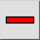
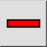

Menu: Blok > Blok verwijderen
Sneltoets: B, R
Commando's: blockremove | br
Werkbalk / icoon:
 

Menu: Blok > Blok verwijderen
Sneltoets: B, R
Commando's: blockremove | br
Beschrijving:
Verwijdert de actieve blok. Het blok, alle objecten erop en alle blokreferenties van het blok zullen worden verwijderd.